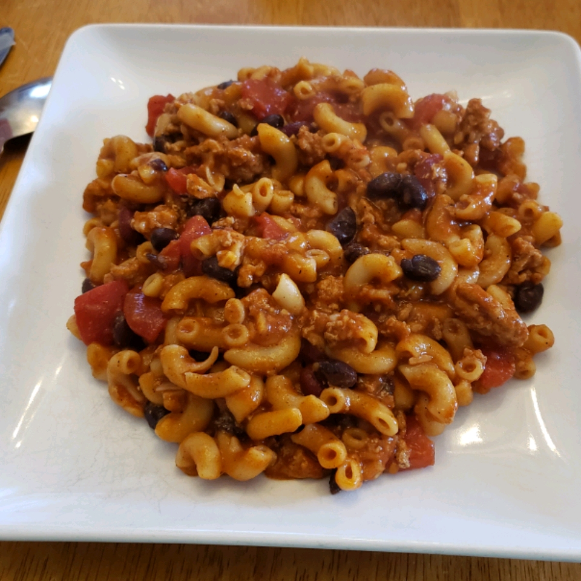

Chili Mac

This is an adaptation of my mother's recipe.
This is a hearty meal, there are no hard and fast rules to it, I often enjoy adding more types of beans, tomatoes, and olives as well. Feel free to use any style of noodle, or even put on a bun.
Ingredients
- 1 pound lean ground beef
- 1 can chili beans (kidney beans in chili sauce)
- 1 can kidney beans
- 1 can rotel diced tomatoes
- 1 large can of spaghetti sauce
- 1/2 box noddles
- Salt & Pepper to taste
Steps
- Bring a pot of water to boil, consult the noodle box for appropriate cooking times.
- In large pot over medium heat, brown the ground beef.
- Drain the liquid if you prefer.
- Stir in the chili beans, kidney beans, and spaghetti sauce.
- Simmer for 15 minutes.
- Stir in the diced tomatoes.
- Simmer an additional 15 minutes.
- Add salt and pepper to taste.
- Mix in the noodles to your desired consistency and enjoy!